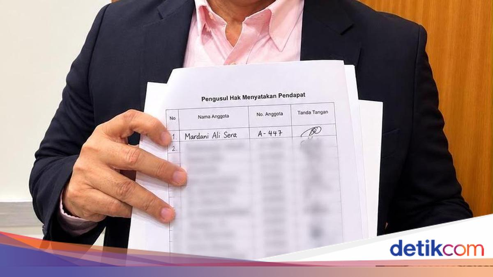

Surat pernyataan itu beredar Selasa siang. Tiga fraksi menyebut isinya soal ijazah, bukan soal pencalonan.
Kompas dan Tempo mengutip dua penanda tangan yang berbeda; keduanya menyebut hal yang sama, jadi klaim ini bersandar pada dua media independen.
Belum ada keputusan resmi. Yang beredar baru surat, bukan putusan.
Mockup v1 rencana 008-arsip-dan-gestur-kembali.md. Token, ukuran
huruf, dan bentuk kartu mengikuti public/style.css; tidak ada warna
baru. Angka edisi (214, 2 tahun) adalah contoh, bukan data nyata.
| Layar | Keadaan yang dicakup |
|---|---|
| A | Nav lima item: Edisi / Sleman / Mingguan / Arsip / Atur. Item yang tidak punya edisi tidak dirender. |
| B | Arsip: satu blok per tanggal, baris scope di dalamnya (Nasional, Sleman, Mingguan). Label bulan, penanda Terbaru (edisi terbaru per scope), Pekan untuk rekap mingguan, Dibuka untuk yang sedang dibaca. Render awal 30 tanggal + “Muat 30 tanggal lagi”. |
| C | Offline: baris tetap tampil dari manifest.json yang ter-cache; edisi yang belum pernah dibuka bertanda “Belum tersimpan offline” dan tidak bisa diketuk. |
| D | Bila hanya ada edisi terbaru, item Arsip tidak dirender — tidak ada tombol tanpa isi. |
| E | Detail: header tanggal besar, subline, dan covline disembunyikan; yang tersisa hanya bar dengan panah kembali dan label Nasional · 11 Nov · kartu 3 dari 8. Gestur back kembali ke feed tanpa memuat ulang dan tanpa kehilangan posisi gulir. |
Rute: #/arsip, #/<scope>,
#/<scope>/<edition_id>,
#/<scope>/<edition_id>/<kartu>. Strip tanggal lama
(#dates) dihapus.